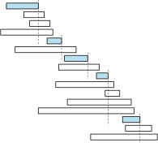
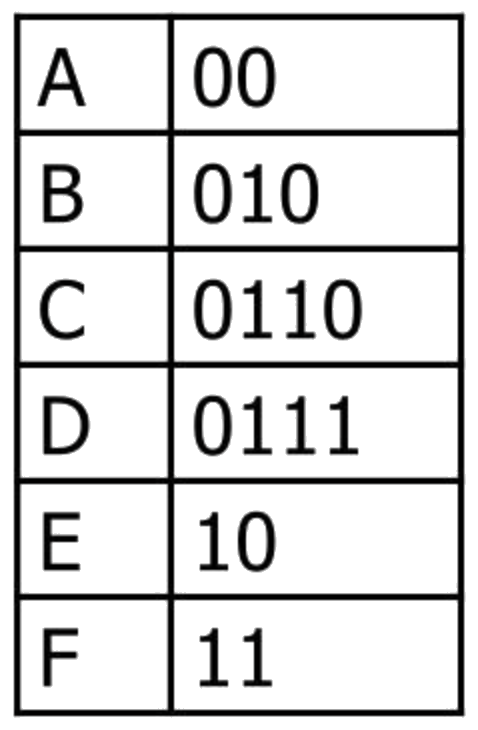

Design & Analysis: Algorithms
20: Greedy Algorithms
Schedule
| # | date | topic | description |
|---|---|---|---|
| 1 | 09-Jan-2023 | Introduction and Introductions | |
| 2 | 11-Jan-2023 | Basics of Algorithm Analysis | |
| 16-Jan-2023 | Holiday | ||
| 3 | 18-Jan-2023 | Asymptotic Analysis | hw1 |
| 4 | 23-Jan-2023 | Recurrence Relations: Substitution | |
| 5 | 25-Jan-2023 | Recursion Trees and the Master Theorem | |
| 6 | 30-Jan-2023 | Recurrence Relations: Annihilators | |
| 7 | 1-Feb-2023 | Recurrence Relations: Transformations | hw2, hw1 |
| 8 | 6-Feb-2023 | Heap & Invariants | |
| 9 | 8-Feb-2023 | Queue & Qsort | |
| 10 | 13-Feb-2023 | Analyzing RQsort | |
| 11 | 15-Feb-2023 | Comparison-based Sorting Analysis | hw3, hw2 |
| 12 | 20-Feb-2023 | Dictionary | |
| 13 | 22-Feb-2023 | Open Address Hashing & Refresher | |
| 14 | 27-Feb-2023 | Midterm exam | midpoint |
| 15 | 1-Mar-2023 | Binary Search Trees I | |
| 16 | 6-Mar-2023 | Binary Search Trees II | hw4, hw3 |
| 17 | 8-Mar-2023 | Balanced Binary Search Trees |
| # | date | topic | description |
|---|---|---|---|
| 13-Mar-2023 | Spring Break | ||
| 15-Mar-2023 | Spring Break | ||
| 18 | 20-Mar-2023 | Dynamic Programming I | |
| 19 | 22-Mar-2023 | Dynamic Programming II | |
| 20 | 27-Mar-2023 | Dynamic Programming ||| | hw5, hw4 |
| 21 | 29-Mar-2023 | Greedy Algorithms | |
| 22 | 3-Apr-2023 | Graphs and Traversals | |
| 23 | 5-Apr-2023 | ||
| 24 | 10-Apr-2023 | hw6, hw5 | |
| 25 | 12-Apr-2023 | ||
| 26 | 17-Apr-2023 | ||
| 27 | 19-Apr-2023 | ||
| 28 | 24-Apr-2023 | hw6 | |
| 29 | 26-Apr-2023 | Final exam | |
| 30 | 2-May-2022 | ||
| 31 | 4-May-2022 |
Outline of the lecture
- Introduction: Tape
- The scheduling problem
- Huffman codes
Greed is good*
- A greedy algorithm always makes the choice that looks best at the moment
- Greedy algorithms do not always lead to optimal solutions, but for many problems they do
- Today, we will see several problems for which greedy algorithms produce optimal solutions including: activity selection and Huffman codes.
- When we get to graph theory, we will also see that greedy algorithms can work well for computing shortest paths and finding minimum spanning trees.
Intro problem
Reading files from tape
- As a backup, store $n$ files on magnetic tape storage.
- We want to eventually read the files.
- To read a file we have to fast-forward
- past all prior files, which could take a lot of time.
- $L[0\dots n-1]$ - an array listing the lengths of all files
- File $i$ has length $L[i]$
- What is the cost of accessing $i^{th}$ file?
Cost of a file access
- Let us store the files in the order from 0 to $n-1$
- What is the cost of accessing file $i$?
- $\mbox{cost}\left(k\right) = \sum_{i=0}^{k} L[i]$
- The cost reflects the fact that we must scan past all files with $i < k$
- Assume each file is equally likely to be accessed. What is the expected cost of accessing a random file?
$\prob{E}{\mbox{cost}} = \sum_{k=0}^{n-1} \frac{\mbox{cost}(k)}{n} = \frac{1}{n} \sum_{k=0}^{n-1} \sum_{i=0}^k L[i]$
The optimal order $\pi$
- Change of file order on the tape changes the cost.
- Different orders result in different expected costs.
- Let us denote a specific order with a permutation function $\pi$. $\pi(i)$ is the order of $i^{th}$ file on the tape.
$\prob{E}{\mbox{cost}(\pi)} = \frac{1}{n} \sum_{k=0}^{n-1} \sum_{i=0}^k L[\pi(i)]$
- Which order to use to minimize the expected cost?
Lemma $\prob{E}{\mbox{cost}(\pi)}$ is minimized when $L[\pi(i)] \leq L[\pi(i+1)] \forall i$
Proof
- Suppose $L[\pi(i)] > L[\pi(i+1)]$ for some $i$
- Let us simplify notation $a = \pi(i)$ and $b=\pi(i+1)$
- Swap $a$ and $b$
- Cost of accessing file $a$ increases by $L[b]$
- Cost of accessing file $b$ decreases by $L[a]$
- Expected cost changes by $(L[b] - L[a])/n$
- $L[b] < L[a]$ Expected cost improves!!!
- Out of order files? Decrease $\prob{E}{\mbox{cost}(\pi)}$ by swapping
Our first correct greedy algorithm
- To minimize the total expected cost of accessing files
- Put the file cheapest to access first
- Recursively write everything else
- No dynamic programming, no backtracking
- Make the best local choice and plow ahead
- $O(n\log n)$ for sorting + time to write the files
Let us generalize the idea
- Suppose we have access frequencies in $F[0\dots n-1]$
- File $i$ will be accessed exactly $F[i]$ times
- The total cost of accessing all files on the tape is
$\sum \mbox{cost}(\pi) = \sum_{k=0}^{n-1} \left( F[\pi(k)] \sum_{i=0}^k L[\pi(i)] \right)$
$\sum \mbox{cost}(\pi) = \sum_{k=0}^{n-1}\sum_{i=0}^k \left( F[\pi(k)] L[\pi(i)] \right)$
- What shall we do now?
- Assume the same file. What shall we do then?
If the sizes and frequencies vary Sort the files by L/F
Lemma $\sum\mbox{cost}(\pi)$ is minimized when $\frac{L[\pi(i)]}{F[\pi(i)]} \leq \frac{L[\pi(i+1)]}{F[\pi(i+1)]} \forall i$
Proof
- Suppose $\frac{L[\pi(i)]}{F[\pi(i)]} > \frac{L[\pi(i+1)]}{F[\pi(i+1)]}$ for some $i$
- Let us simplify notation $a = \pi(i)$ and $b=\pi(i+1)$
- Swap files $a$ and $b$ in the tape writing order
- Cost of accessing file $a$ increases by $L[b]$
- Cost of accessing file $b$ decreases by $L[a]$
- Expected cost changes by $L[b]F[a] - L[a]F[b]$
- $L[b]/F[a] > L[a]/F[b] \iff L[b]F[b] - L[a]F[b] <0$
Take Home
- Prove correctness of a greedy algorithm by contradiction on a local operation
Scheduling
Activity Selection
- You are given a list of programs to run on a single processor
- Each program has a start time and a finish time
- However the processor can only run one program at any given time, and there is no preemption (i.e. once a program is running, it must be completed)
Movie watching/theme park rides
- Suppose you are at a film fest, all movies look equally good, and you want to see as many complete movies as possible
- This problem is also exactly the same as the activity selection problem.
Example
Imagine you are given the following set of start
and stop times for activities
Ideas
- There are many ways to optimally schedule these activities
- Brute Force: examine every possible subset of the activites and find the largest subset of non-overlapping activities
- Q: If there are $n$ activities, how many subsets are there?
- There is also a DP solution to the problem (check Cormen et al. book)
Greedy Activity Selector
- Sort the activities by their finish times
- Schedule the first activity in this list
- Now go through the rest of the sorted list in order, scheduling activities whose start time is after (or the same as) the last scheduled activity
sort activities by the finish time
Analysis
- Let $n$ be the total number of activities
- The algorithm first sorts the activities by finish time taking $O(n \log n)$
- Then the algorithm visits each activity exactly once, doing a constant amount of work each time. This takes $O(n)$
- Thus total time is $O(n \log n)$
Lemma At least one maximal conflict-free schedule includes the activity that finishes first
Proof
- Let $f$ be the activity that finishes first
- Suppose $X$ is the maximal conflict-free schedule excluding $f$
- Let $g$ be the first activity in $X$ to finish
- $f$ finishes before $g$ it does not conflict with an activity in $X\setminus\{g\}$
- The schedule $X^\prime = X \cup \{f\}\setminus\{g\}$ is conflict-free
- $X^\prime$ is the same size as $X$ so is also maximal
Theorem The greedy schedule is an optimal schedule
Proof
- Let $f$ be the activity that finishes first
- Let $A$ be the subset of activities that finish after $f$
- The lemma showed that there is an optimal schedule containing $f$
- The optimal schedule containing $f$ must also be optimal for $A$
- Now, we start with the first finishing job in $A$ and use induction
Theorem The greedy schedule is an optimal schedule
Proof
- Let $\langle g_1, g_2, \dots, g_k\rangle$ be the sequence chosen by the greedy alg.
- The sequence is sorted by starting time.
- Suppose there is a maximal conflict-free schedule $\langle g_1, g_2, \dots, g_{j-1}, c_j, c_{j+1}, \dots, c_m\rangle$
- $g_j$ finishes after all $g_1, g_2, \dots, g_{j-1}$ and not conflicting with any
- $g_j$ has the earliest finish time among activities that do not conflict with activities in $g_1, g_2, \dots, g_{j-1}$
- $g_j$ finishes earlier than $c_j$
- Follows $g_j$ does not conflict with any of $c_{j+1}, \dots, c_m$, thus
- $\langle g_1, g_2, \dots, g_{j-1}, \mathbf{g_j}, c_{j+1}, \dots, c_m\rangle$ is also conflict free
- By induction $\exists$ an optimal with every activity chosen by greedily
Correctness proof structure
- Assume that there is an optimal solution different from the greedy solution.
- Find the "first" difference between the two solutions
- Argue that we can exchange the optimal choice for the greedy choice without making the solution worse (does not have to make it better though)
Greedy Pattern
- The problem has a solution that can be given some numerical value. The “best” (optimal) solution has the highest/lowest value.
- The solutions can be broken down into steps. The steps have some order and at each step there is a choice that makes up the solution.
- The choice is based on what’s best at a given moment. Need a criterion that will distinguish one choice from another.
- Finally, need to prove that the solution that you get by making these local choices is indeed optimal
Huffman codes

Prefix-free codes
- A binary code assigns a string of $0$s and $1$s to each character in the alphabet.
- A binary code is prefix-free if no code is a prefix of any other.
- Prefix-free codes are also commonly called prefix codes.
- Any prefix-free binary code can be visualized as a binary tree
- The encoded characters stored at the leaves
- The code word for any symbol is given by the path from the root to the corresponding leaf; $0$ for left, $1$ for right.
- Binary code trees are not binary search trees; we don’t care at all about the order of symbols at the leaves.
Encoding
- Encode a message written in an $n$-character alphabet
- Make the message as short as possible!
- Specifically, given an array $f[1..n]$ of frequency counts
- Compute a code that minimizes the total encoded message length $\sum_{i=1}^n f[i]\cdot \mbox{depth}(i)$
- But how?
Lemma Let $x$ and $y$ be the two least frequent characters (breaking ties between equally frequent characters arbitrarily). There is an optimal code tree in which $x$ and $y$ are siblings.
Proof
Lemma Every Huffman code is an optimal prefix-free binary code.
Proof
Knapsack problem
- Those problems for which greedy algorithms can be used are a subset of those problems for which dynamic programming can be used
- So, it’s easy to mistakenly generate a dynamic program for a problem for which a greedy algorithm suffices
- Or to try to use a greedy algorithm when, in fact, dynamic programming is required
- The knapsack problem illustrates this difference
- The 0-1 knapsack problem requires dynamic programming, whereas for the fractional knapsack problem, a greedy algorithm suffices
0-1 Knapsack problem
- A thief robbing a store finds $n$ items, the $i^{th}$ item is worth $v_i$ dollars and weighs $w_i$ pounds, where $w_i$ and $v_i$ are integers
- The thief has a knapsack which can only hold $W$ pounds for some integer $W$
- The thief’s goal is to take as valuable a load as possible
- Which values should the thief take?
Fractional Knapsack
- In this variant of the problem, the thief can take fractions of items rather than the whole item
- An item in the 0-1 knapsack is like a gold ingot whereas an item in the fractional knapsack is like gold dust
Greedy
- We can solve the fractional knapsack problem with a greedy
algorithm:
- Compute the value per pound ($\frac{v_i}{w_i}$) for each item
- Sort the items by value per pound
- The thief then follows the greedy strategy of always taking as much as possible of the item remaining which has highest value per pound.
Analysis
- If there are $n$ items, this greedy algorithm takes $O(n \log n)$ time
- We’ll show in the in-class exercise that it returns the correct solution
- Note however that the greedy algorithm does not work on the 0−1 knapsack
Failure on 0-1 Knapsack
- Say the knapsack holds weight 5, and there are three items
- Let item 1 have weight 1 and value 3, let item 2 have weight 2 and value 5, let item 3 have weight 3 and value 6
- Then the value per pound of the items are: 3, 5/2, 2 respectively
- The greedy algorithm will then choose item 1 and item 2, for a total value of 8
- However the optimal solution is to choose items 2 and 3, for a total value of 11
Theorem Greedy is not optimal on 0-1 knapsack, but it is optimal on fractional knapsack
Proof
- Assume the objects are sorted in order of cost per pound. Let $v_i$ be the value for item $i$ and let $w_i$ be its weight.
- Let $x_i$ be the fraction of object $i$ selected by greedy and let $V$ be the total value obtained by greedy
- Consider some arbitrary solution, $B$, and let $x_i^\prime$ be the fraction of object $i$ taken in $B$ and let $V^\prime$ be the total value obtained by $B$
- We want to show that $V^\prime \leq V$ or that $V − V^\prime \geq 0$
- Let $k$ be the smallest index with $x_k < 1$
- Note that for $i < k$, $x_i = 1$ and for $i > k$, $x_i = 0$
- You will show that for all $i$, $(x_i - x_i^\prime)\frac{v_i}{w_i} \geq (x_i - x_i^\prime)\frac{v_k}{w_k}$
Proof (continues)
\begin{align} V - V^\prime & \fragment{1}{= \sum_{i=1}^{n}x_iv_i - \sum_{i=1}^n x^\prime_iv_i}\\ & \fragment{2}{ = \sum_{i=1}^n (x_i - x_i^\prime)v_i}\\ & \fragment{3}{= \sum_{i=1}^n (x_i - x_i^\prime)w_i\frac{v_i}{w_i}}\\ & \fragment{4}{ \geq \sum_{i=1}^n (x_i - x_i^\prime)w_i\frac{v_k}{w_k}}\\ & \fragment{5}{ \geq \frac{v_k}{w_k}\sum_{i=1}^n (x_i - x_i^\prime)w_i}\\ & \fragment{6}{\geq 0} \end{align}
Proof (note)
- The last step follows because $\frac{v_k}{w_k}$ is positive and because: \begin{align} \sum_{i=1}^n (x_i - x_i^\prime)w_i & = \sum_{i=1}^n w_ix_i - \sum_{i=1}^n w_ix_i^\prime\\ &= W- W^\prime\\ &\geq 0 \end{align}
- Where $W$ is the total weight taken by greedy and $W^\prime$ is the total weight for the strategy $B$
- We know that $W \geq W^\prime$
In Class Exercise 
Consider $(x_i - x_i^\prime)\frac{v_i}{w_i} \geq (x_i - x_i^\prime)\frac{v_k}{w_k}$
- Show this inequality is true for $i < k$
- Show it’s true for $i = k$
- Show it’s true for $i > k$